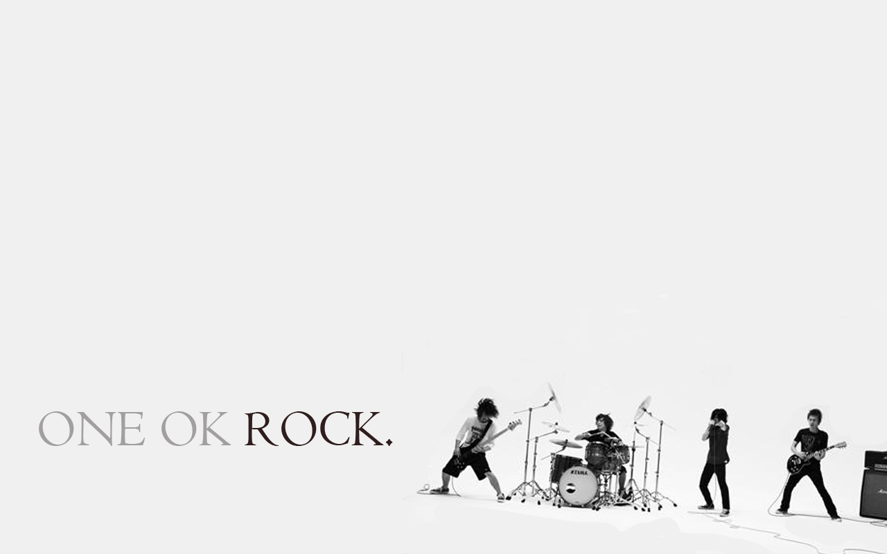

One Ok Rock es una banda japonesa de rock formada en el año 2005, actualmente compuesta por cuatro miembros.
| Año | Album |
|---|---|
| 2007 | Zeitakubyo |
| 2008 | Beam of Light |
| Kanjo Effect | |
| 2010 | Niche Syndrome |
| 2011 | Zankyo Reference |
| 2013 | Jinsei×Boku= |
| 2015 | 35xxxv |
| 2017 | Ambitions |
| 2019 | Eye of the Storm |
| 2022 | Luxury Disease |